ECON 1116 • Principles of Microeconomics • Chapter 15
Capital, Land, and Factor Markets
Why does a barren parking lot in Manhattan sell for $30 million — and why would anyone hand $6 billion to a company that has never turned a profit?
Dr. Richeng Piao
Department of Economics
Northeastern University
Learning Objectives
15.1
Explain why land earns economic rent — and why a fixed supply makes price purely demand-determined
15.2
Use present value to decide whether a capital investment is worth making
15.3
Compare the five channels firms use to raise financial capital
15.4
Show how supply & demand for loanable funds set the interest rate — the price of capital
15.5
Describe the entrepreneur as the fourth factor and explain creative destruction
Quick Recall — Chapter 14
Last time we studied the labor market. A firm hires workers until the wage equals what? (Hint: three letters.)
Why is the demand for labor called a derived demand?
Labor is just one of the four factors of production. Can you name the other three?
Discuss with your neighbor — 90 seconds.
Hook — Three Strange Prices
$30M
A barren parking lot in midtown Manhattan, 2024. Not the lot — the land beneath it.
$20B
Amazon spent on warehouse robots, 2020–2025. Pay now, save labor for years.
$6B
A VC check to OpenAI, a company that had never earned a profit.
Three prices, one question all chapter: How do markets price the factors that aren’t labor?
Land · physical capital · financial capital · entrepreneurship
Section 1 · LO 15.1
Land and the Theory of Rent
David Ricardo, 1817 — a 200-year-old model that still prices Manhattan, Saudi oil, and Shohei Ohtani.
What Is “Land”?
Key Concept · Land
Natural resources used in production — farmland, mineral deposits, water, airwaves, and physical sites. Land is “the gifts of nature” — what production starts with rather than makes.
Anything in nature production draws on: the lot a coffee shop sits on, the airwaves a station broadcasts over, the river a dam taps. (First defined Ch 3, §3.1.1.)
Land’s Defining Trait: It’s Scarce
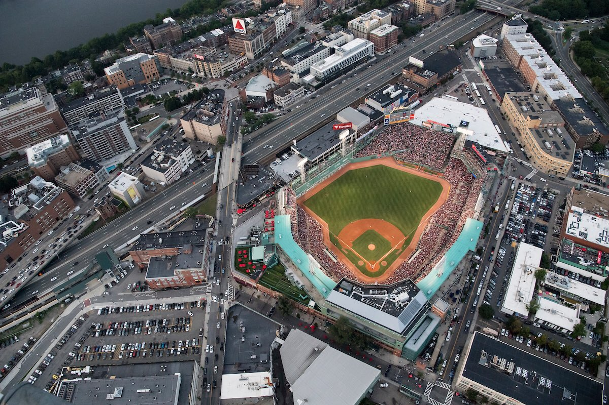
The most important feature of land: it is extremely scarce and its supply normally cannot expand.
Fenway Park is boxed in by the densest part of Boston. You can’t make more land where it’s wanted most.
The only escape is a new frontier — which is why SpaceX talks about colonizing the Moon and Mars.
Location, Demand & the Fixed Supply of Land
Desirability drives land prices — firms want proximity to their product markets or input suppliers. But supply can’t respond…
Starbucks near Tufts Medical Center — prime location, $3.65 grande (vs $2.95).
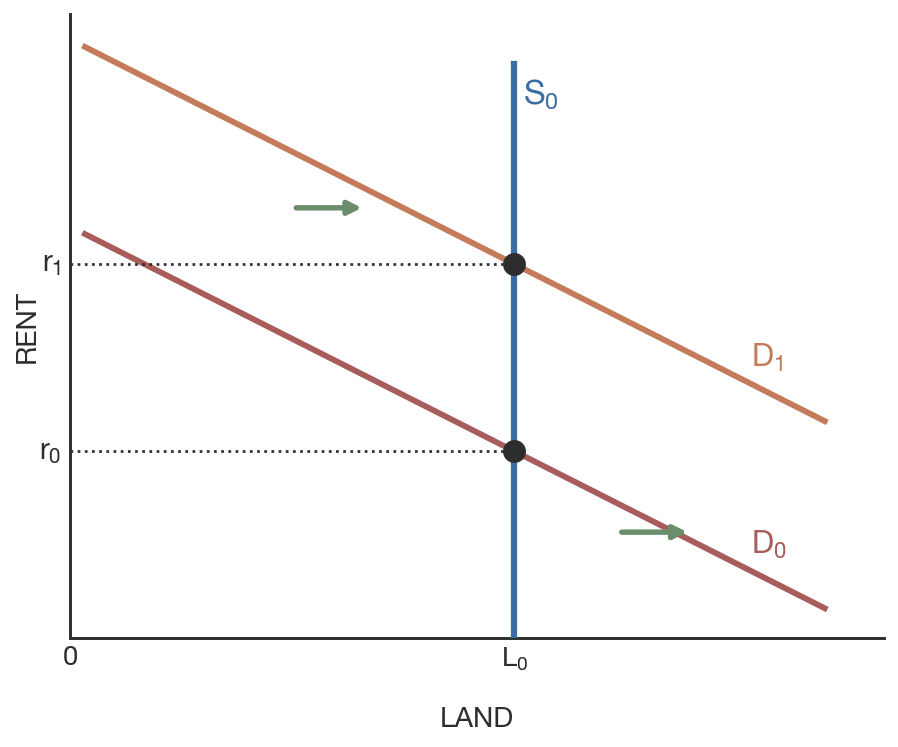
You can’t manufacture more beachfront — supply is perfectly inelastic (a vertical line, S₀).
Price is set entirely by demand: D₀→D₁ lifts rent r₀→r₁, quantity never moves. (Coffee farmers replant; land can’t.)
Scarce Land → Steep Prices (Right Here in Fenway)
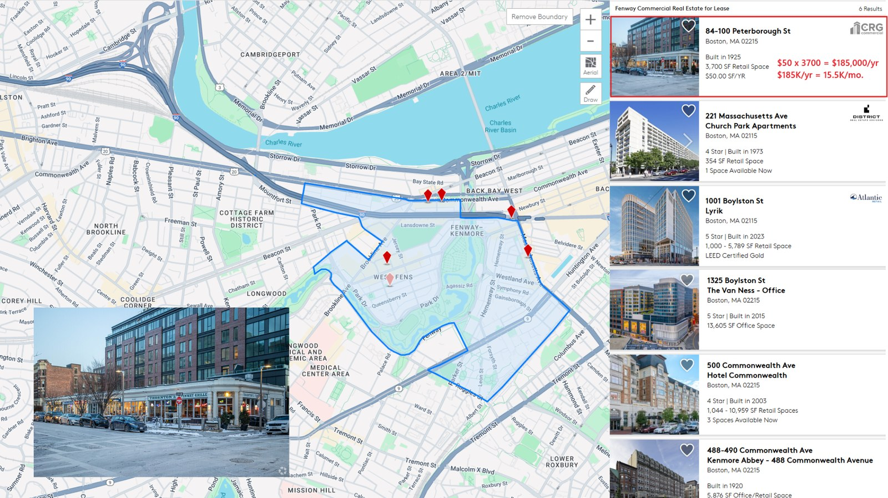
84–100 Peterborough St: 3,700 SF at $50/SF/yr = $185,000/yr (~$15.5K/month) — the price of a fixed location pressed by demand.
Rent Theory — Who Was David Ricardo?
David Ricardo studied the wheat market to understand economic rent and land value, focusing on:
1. Corn Laws & food prices — tariffs raised food prices, letting him trace the effect on land rents, wages, and profits.
2. Land productivity & rent — rent is tied to land quality, especially as demand pushes farming onto less fertile land.
3. Distribution of wealth — rising prices made landlords richer, raising the split among landlords, capitalists, and workers.
These insights became his theory of differential rent — the model we’re about to walk through.
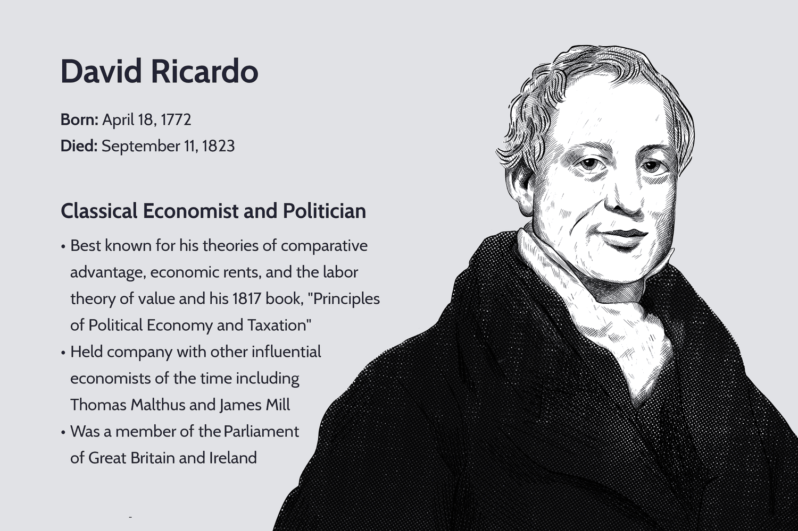
The Parable of Three Settlers
First settlers claim the best meadows (100 bushels). Land is abundant → they pay no rent.
As settlers arrive, every meadow is taken. Fatima can farm free scrubland (60 bushels) — or rent a meadow.
She’ll pay up to 100 − 60 = 40 bushels. Rent = the gap over the marginal land.
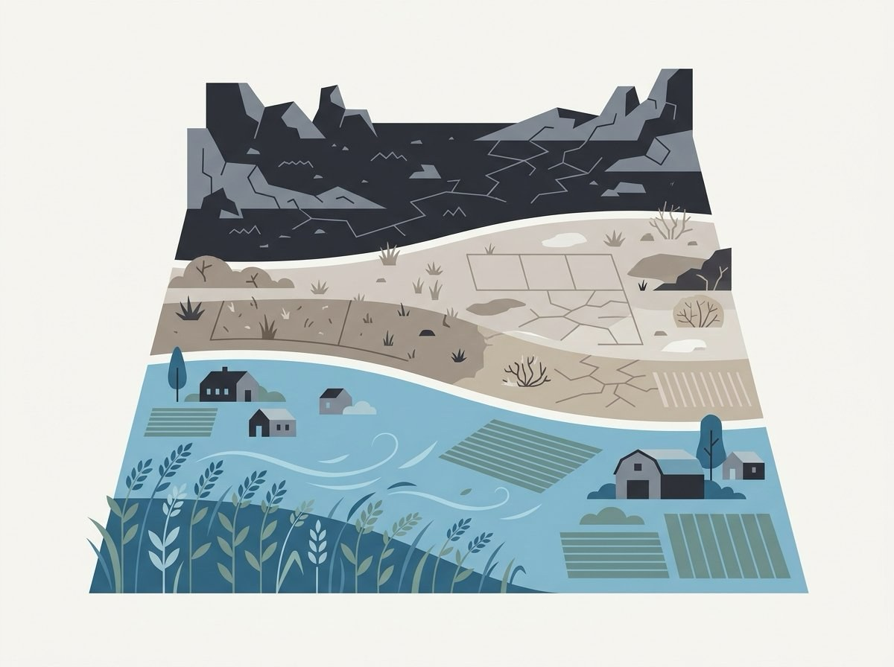
Rent = Productivity Gap Above the Marginal Land
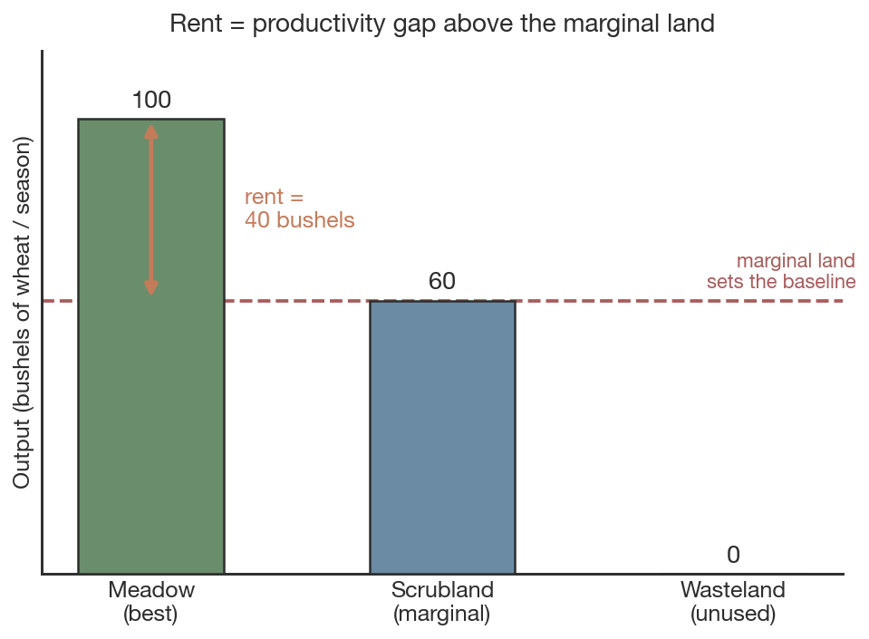
The marginal land (scrubland, 60) is the least productive plot still in use. It sets the baseline.
Rent on any parcel = its productivity − the marginal land’s. Better land → bigger gap → higher rent.
Two Definitions to Lock In
Marginal land
The least productive land still in use. Its productivity is the baseline against which all other rents are measured.
Economic rent
Payment to a factor above the minimum needed to keep it in its current use. When supply is perfectly inelastic, the entire payment is economic rent.
Differential Rent — Why Landlords Love the Common
Same business, two locations: a full-service restaurant on Boston Common pays ~$17,000/mo; a comparable one in Brookline pays ~$8,500. That gap is differential rent.
A spot beside a beautiful, protected park is scarce and desirable — so it commands a premium that flows straight to the landowner.
The twist: landlords around the Common have every incentive to lobby city authorities to keep it as a park that can’t be commercialized — preserving the scarcity that inflates their own rents.
Same logic as London’s Green Belt — protecting open space quietly hands a rent windfall to nearby owners. (We’ll return to it.)
Economic Rent Is Everywhere
Any factor whose supply can’t expand to meet demand earns rent — not just dirt.
Manhattan land — 22.8 sq mi, unchanged since 1626. A parking lot sold for $30M; the price is pure rent.
Shohei Ohtani — $700M Dodgers deal vs ~$5M next-best. The ~$65M/yr gap is rent on a vertical talent supply.
cars.com — valued at $872M. There is exactly one. Entire value is economic rent.
A neurosurgeon — $800K, would stay for $200K. The $600K gap is rent on extreme scarcity of skill.
The more inelastic the supply, the larger the share of payment that is rent.
OPEC and the Rent on Oil
Meadowland = Saudi crude
Cheap, easy to extract — sometimes under $10/barrel. Huge rent when world prices are high.
Scrubland = oil sands & deepwater
Feasible but expensive — over $50/barrel. Only profitable when prices are high.
OPEC restricts output — like banning farming on some grassland. It raises the price and the rent on its cheap “meadows.” Saudi rents fund ~60% of the government budget.
Ricardo in 2025: Medallions & Spectrum
NYC taxi medallions
Capped at a fixed number in 1937. As the city grew, prices hit $1.3M (2013). Pure rent on artificial scarcity.
Uber/Lyft entered without medallions — effectively expanding supply. Values crashed to $80K.
Radio spectrum
Genuinely fixed by physics. FCC auctions licenses; winning bids are rent on a natural resource.
T-Mobile paid $3.5B for spectrum in 2024. Like Manhattan, it can’t be manufactured.
A 200-year-old model still explaining markets Ricardo never imagined.
Your Turn — Spot the Economic Rent
A pop star earns $40M/year. Her next-best career — voice teacher — would pay $60K/year. Roughly how much of her income is economic rent?
Click your answer. Press ↓ for results.
Poll Results
Answer: C — almost all of it (~$39.9M). Economic rent is the payment above the minimum needed to keep her singing. She’d still perform for her next-best wage of $60K, so the other $39.94M is rent on a near-vertical talent supply.
Same logic as Shohei Ohtani’s ~$65M/yr — scarce talent earns rent.
Think Like an Economist
London’s Green Belt (1947) bans most development on a ring around the city — the equivalent of banning farming on the grassland.
Who benefits? Existing homeowners inside the boundary — their property values rise.
Who pays? Renters and first-time buyers facing artificially high prices.
A 200-year-old model lighting up a thoroughly modern policy debate.
Common Misconception: Can’t We Just Make More Land?
“If land is fixed, how do you explain Boston’s Back Bay or Dubai’s Palm Islands?”
Boston built its own land. The hilly Shawmut Peninsula (<800 acres) had its three Trimount hills leveled in the 1800s; the gravel filled the Mill Pond, South Cove (→ Chinatown), and the Back Bay (1857–82, ~700 acres). A peninsula became a ~89 sq-mi city.
But it’s slow and astronomically expensive — Dubai’s Palm Jumeirah cost $12B over six years.
And it creates land in one spot — you can’t make another Times Square. Desirable locations stay fixed, so Ricardo’s vertical supply curve holds.
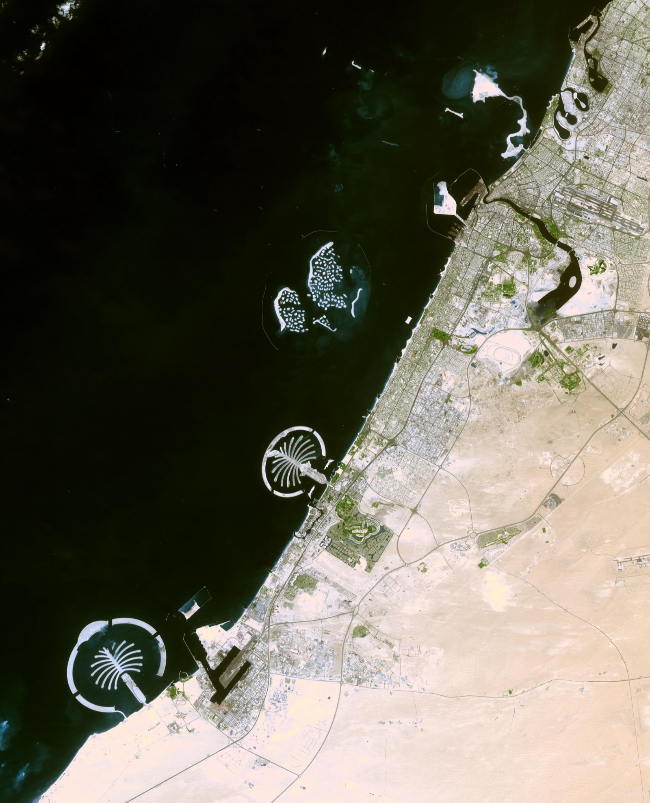
Can We Ever Add Land? — Improving Land
Though generally inelastic, usable land can be increased at the margin — irrigation, clearing jungle, draining swamps, terracing mountains, and land reclamation (new land from the sea).
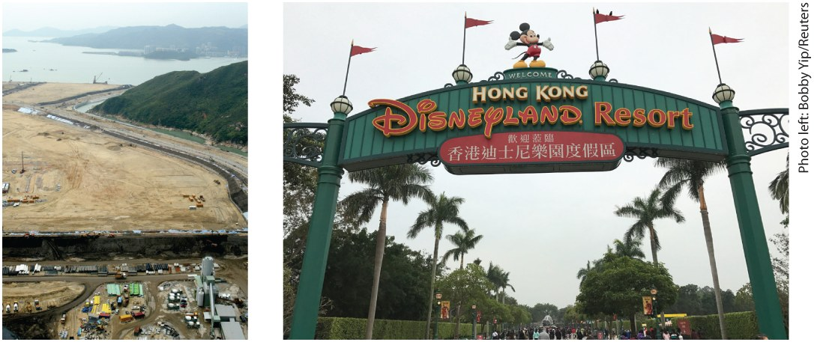
Examples: Hong Kong Disneyland & Dubai’s artificial islands — built on reclaimed sea floor.
But: these projects are slow and astronomically expensive — and can’t make another Times Square.
Why Firms Cluster: Agglomeration
Industrial agglomeration: related firms cluster, pushing local rents up — but the benefits outweigh the cost.
Marshall’s external economies of scale:
- A shared pool of specialized workers
- Dense networks of suppliers · rapid knowledge spillovers
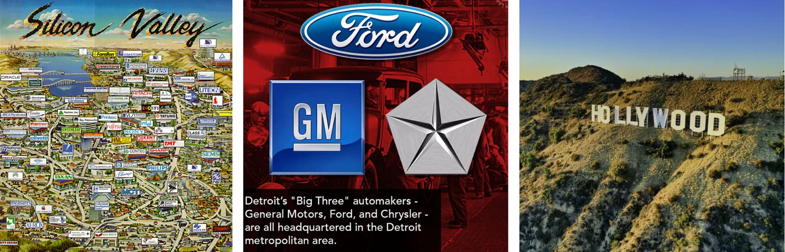
Silicon Valley tech · Detroit autos · Hollywood film — the rent flows to whoever owns property in the right place.
Section 2 · LO 15.2
Physical Capital & the Investment Decision
When the costs come now but the benefits come later, you need one tool: present value.
Is the Investment Worthwhile Today?
Each is a huge upfront capital bet whose value rides on the present value of uncertain future returns — invest only if PV(returns) > cost.
Same question for all three — and for Microsoft’s quantum chip: do the discounted future returns beat the cost? Higher interest rates raise the bar. That’s the tool we build next: present value.
A Capital Investment You Can See: NEU’s EXP
The benefit: NEU built EXP — a physical-capital asset — to produce more over decades: more classes & labs, more research & development, more grants and students.
The cost: hundreds of millions now, financed at an interest rate the university must pay (or forgo earning elsewhere).
The decision: build only if the discounted future benefits beat that cost of capital — the same MRPₖ-vs-interest-rate logic as Amazon’s robots.
Background: Where Does the Money Come From?
A firm needs money to buy capital (to produce more, or more efficiently). It doesn’t print it — it borrows from the financial system, which is funded by savers like us.
👤
You / Households
Savers supply funds in the factor market
🏦
Banks & Markets
Channel savings into loans, bonds, equity
🏭
Firms
Get the money → buy capital
The price that connects them is the interest rate: we earn it for lending our savings; the firm pays it to fund its capital. (We map this market in §15.3–15.4.)
Is It Worthwhile? Two Tools
1. Present Value (PV)
Discount every future return back to today’s dollars, add them up, and compare to the upfront cost.
Invest if PV(returns) > cost
2. Internal Rate of Return (IRR)
Find the break-even rate that makes PV(returns) exactly equal the cost — the project’s own rate of return.
Invest if IRR > market interest rate
Two sides of the same coin — both give the same yes/no, and the interest rate is the hurdle. Let’s run the numbers on Amazon’s robots.
Labor or Capital? Where the Next Dollar Goes
PV and IRR tell you whether a project clears the bar. But a firm also chooses where its next investment dollar goes — more workers or more machines? It compares the return from each side.
Labor — MRPL
Extra revenue from one more worker. Hire until MRPL = wage (w).
Capital — MRPK
Extra revenue from one more machine. Invest until MRPK = cost of capital (r).
The next dollar goes wherever the bang-per-buck is bigger. At the best mix, the last dollar on each input earns the same return:
\( \dfrac{MRP_K}{r} \;=\; \dfrac{MRP_L}{w} \)
Both MRPs slope down (diminishing returns) — so the firm keeps reallocating until the returns balance.
Physical Capital
Manufactured products used to make other goods & services — cranes, machinery. Buying them is called investment.
MRPK = demand for capital. The extra revenue from one more unit of capital — downward-sloping due to diminishing returns.
Cost of capital = opportunity cost = the interest rate (borrowing cost, or forgone savings).
Investment level: firms invest until MRPK = cost of capital.
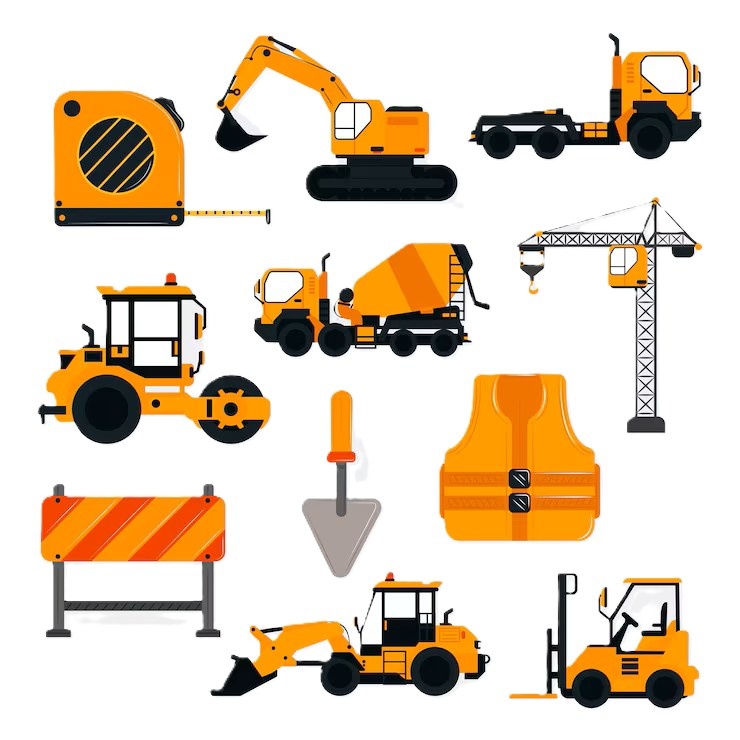
Time Value of Money
Goal: compare investments with different income streams — payoffs that arrive at different times. Money you save earns interest, so it’s worth more later.
Discuss: how do you connect a dollar today to a dollar a year from now?
Today → Future: compound
\( FV = PV\,(1+r)^t \)
Future → Today: discount
\( PV = \dfrac{FV}{(1+r)^t} \)
The bridge between today and the future is the factor (1 + r) — multiply to go forward, divide to come back.
Why a Dollar Today Wins: Discounting
$100 today > $100 in the future — today’s $100 can earn interest (and future dollars lose value to inflation).
Discounting = the process of calculating the present value of future income (running the compounding in reverse).
$100 compounding at 10% a year — each step is ×1.10:
Going right = compounding (FV). Going left = discounting (PV). Same ladder, two directions.
Present vs. Future: Earning Interest
Example: what is the future value of $1,000 lent for one year at 5%?
\( FV = PV(1+i)^n \)
\( FV = 1000\,(1+0.05)^1 \)
\( FV = 1000\,(1.05) \)
\( FV = \$1{,}050 \)
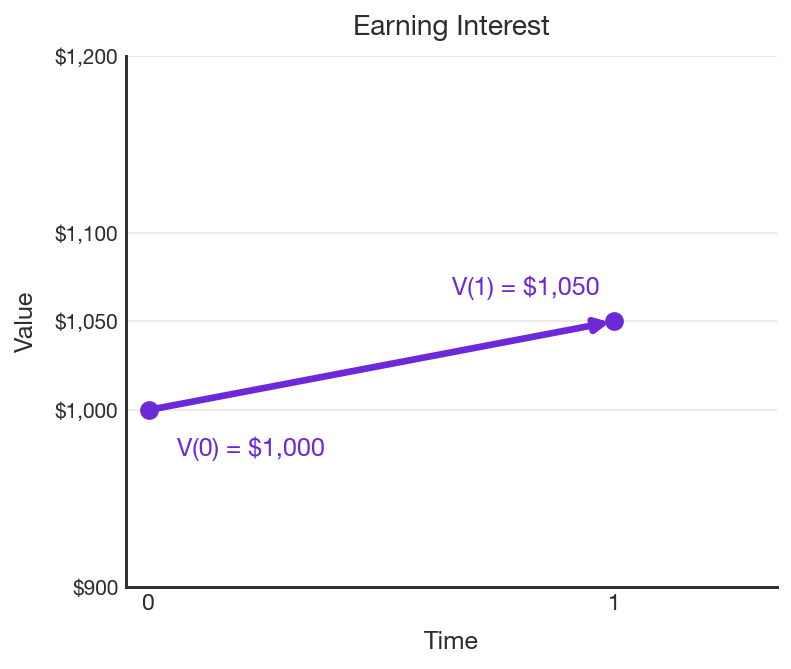
Present vs. Future: Discounting
Example: what is the present value of getting $1,000 one year from now at 5%?
\( PV = \dfrac{FV}{(1+i)^n} \)
\( PV = \dfrac{1000}{(1+0.05)^1} = \dfrac{1000}{1.05} \)
\( PV = \$952.38 \)
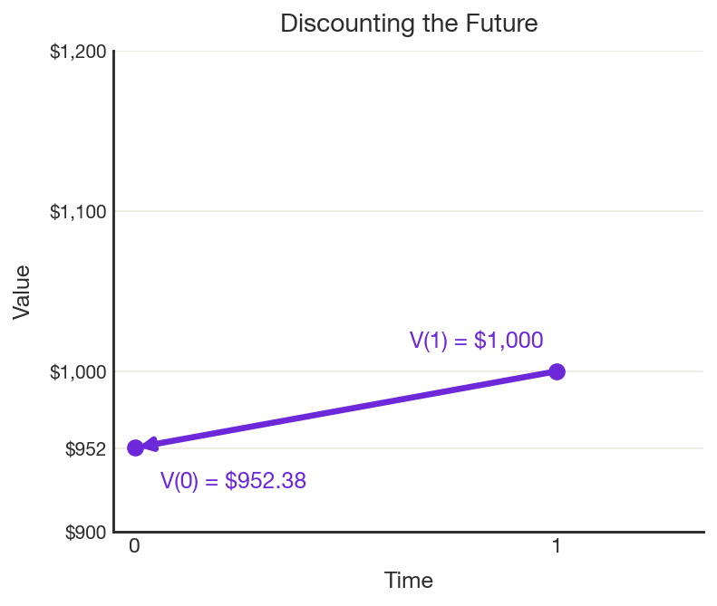
How Fast Future Dollars Shrink
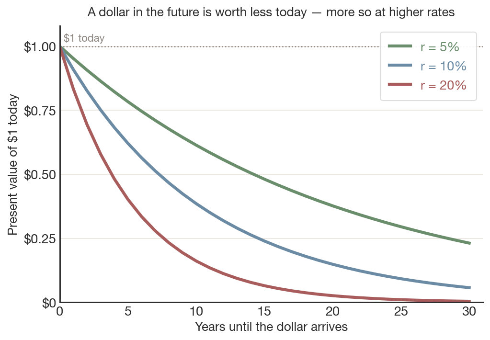
At 5%, $1 in 30 years is still worth ~23¢.
At 20%, that same dollar is worth less than 0.5¢.
Higher interest rates punish the distant future — which is why rates govern long-horizon investment.
Worked Example: Amazon’s Robots
Spend $10M now on robots that save $3M/year for 5 years. Worth it at 5%?
| Year | Savings | ÷ (1.05)n | PV |
|---|---|---|---|
| 1 | $3.00M | 0.952 | $2.857M |
| 2 | $3.00M | 0.907 | $2.721M |
| 3 | $3.00M | 0.864 | $2.592M |
| 4 | $3.00M | 0.823 | $2.468M |
| 5 | $3.00M | 0.784 | $2.350M |
| Total PV of savings | $12.99M | ||
PV of savings $12.99M > cost $10M
Buy the robots. ✓
The Same Robots at Higher Rates
| Interest rate | Total PV of savings | Profitable? |
|---|---|---|
| 5% | $12.99M | Yes — margin $2.99M |
| 10% | $11.37M | Yes — margin $1.37M |
| 15% | $10.06M | Barely — margin $0.06M |
| 20% | $8.97M | No — short $1.03M |
The interest rate is a gatekeeper: it decides which investments clear the bar.
The Internal Rate of Return (IRR)
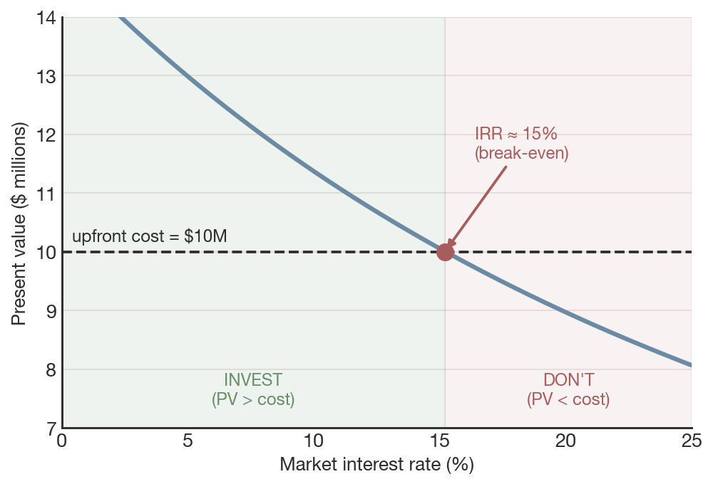
IRR = the rate at which PV of returns exactly equals the upfront cost. Here ≈ 15%.
Decision rule: invest if IRR > market rate. At 5% the 15% IRR clears easily; at 20% it fails.
PV and IRR are two sides of one coin — one compares dollars, the other compares rates.
Think Like an Economist: Your Degree
A college education is a capital investment in yourself. You pay tuition and forgo wages now in exchange for a higher earnings stream — about a $1.2M lifetime premium (Ch 14).
Run the PV logic: at what interest rate would a 17-year-old rationally skip college, even with that large premium?
What does that imply about student-loan rates and college enrollment?
Try It Out — SpaceX’s Reusable Booster
SpaceX can spend $200M now to make a Falcon 9 booster reusable, saving $60M per year for 5 years in new-rocket costs. The interest rate is 10%.

1. FV: if they banked the $200M at 10% instead, what is it worth in 5 years?
2. PV: what is the present value of the $60M/yr savings at 10%? Build it?
3. Rates: is it still worth building at 20%?
Work it out with your neighbor — press ↓ for the solution. (5-yr annuity factors: 5%→4.33, 10%→3.79, 15%→3.35, 20%→2.99)
Solution — SpaceX’s Reusable Booster
1. FV = 200(1.10)5 = 200 × 1.611 = $322M — the cost of not investing elsewhere.
2. PV = 60 × 3.79 = $227M > $200M cost → Build it. ✓
3. At 20%: PV = 60 × 2.99 = $179M < $200M → Don’t. × (IRR ≈ 15%)
| Rate | PV of savings | Build? |
|---|---|---|
| 5% | $259.8M | Yes |
| 10% | $227.4M | Yes |
| 15% | $201.1M | Barely |
| 20% | $179.4M | No |
Same logic as Amazon’s robots: invest while PV(returns) > cost, and the higher the rate, the harder it is to clear.
The Power of Compounding: A 50-Year Mortgage?
A proposed policy — stretch home loans to 50 years — promises lower monthly payments. Use the time-value lens to evaluate it. (Click a clip to play; use its fullscreen button to zoom.)
The pitch: on a $400K loan at 6%, the monthly payment falls from $2,398 (30-yr) to $2,105 (50-yr) — about $293 less a month.
The catch — compounding: you pay interest for 20 extra years. Total interest balloons, and you build equity far slower. A lower payment is not a cheaper loan.
Section 4 · LO 15.4
Interest Rates & the Credit Market
The interest rate is just a price — set where the supply and demand for funds meet.
The Loanable Funds Market
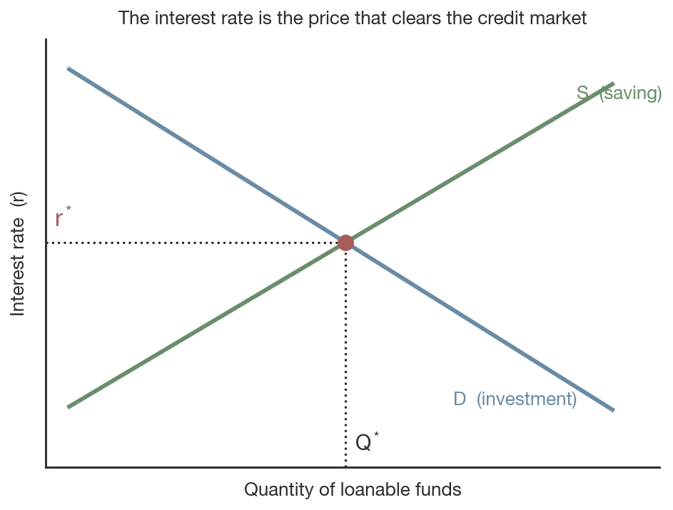
Savers → supply money. Slopes up: higher rates reward saving.
Borrowers → demand money. Slopes down: lower rates make more projects pay.
They meet at the equilibrium interest rate — the price firms weigh for every investment.
Rate ↑ → cost of borrowing ↑ → money demanded ↓
Rate ↓ → cost of borrowing ↓ → money demanded ↑
The Market Sets the Firm’s Investment
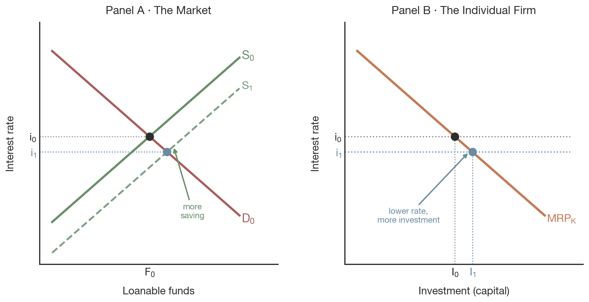
The firm is a price-taker in the credit market. The market sets the rate i₀; the firm invests I₀ where MRPK = i₀. More saving → S₀→S₁ → rate falls to i₁ → the firm slides down MRPK and invests more (I₁).
What Moves the Equilibrium Rate?
Shifts in supply (saving)
- Uncertainty → save more (COVID 2020) → rates down
- Aging population draws down savings → rates up
- Govt deficits absorb funds — crowding out
Shifts in demand (investment)
- Tech optimism (AI boom) → demand up → rates up
- Recessions → firms postpone → rates down
- The Fed sets short rates directly
The Low-Rate Decade & Its Reversal
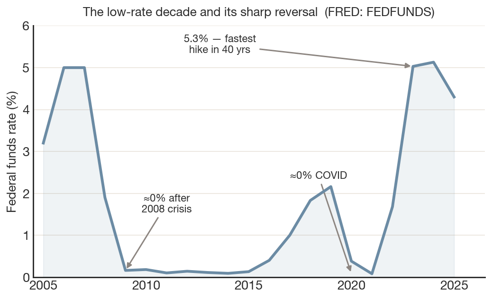
2010–2021: ~0.8% avg. Cheap capital fueled AI, cloud, automation; VC flooded into Uber, Airbnb, OpenAI. Mortgages fell below 3%.
2022–2023: hiked to 5.3%. VC fell 35%, housing sales plunged, automation projects shelved.
The interest rate is the connective tissue linking every factor market.
Economist at Work: The Fed’s Dual Mandate
Congress gives the Fed two jobs: maximize employment and stabilize prices.
When inflation hit 9.1% (June 2022), the Fed raised rates fast — deliberately slowing investment and hiring to ease price pressure. By late 2024 inflation was ~2.7%, and cuts began.
Eight meetings a year — each decision ripples through every factor market in this chapter.
The Capital Investment Rule
Labor: hire until W = MRP
Capital: invest until the return on the last unit = the interest rate
The low-rate decade (2010–2021, ~0.8%) made huge waves of AI and automation profitable. When the Fed hiked to 5.3% in 2022–2023, many of the same projects were shelved. The interest rate shapes the pace and direction of technological change itself. Track today’s rate — the Effective Federal Funds Rate: newyorkfed.org/markets/reference-rates/effr
Federal funds rate over time (FRED: FEDFUNDS)
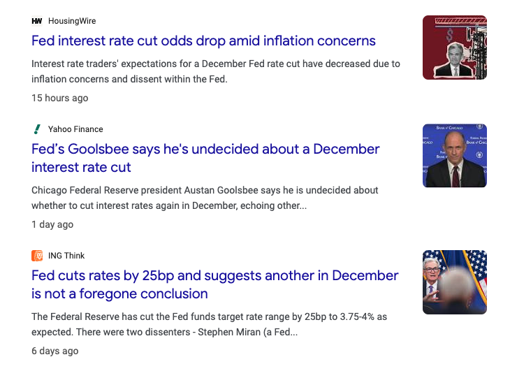
Section 3 · LO 15.3
Financial Markets: Where the Money Comes From
Firms invest when the return beats the interest rate — but first they have to raise the cash.
Five Channels to Raise Capital
1. Bank loans — small/medium firms, predictable cash flow
2. Bonds — borrow directly from many investors
3. Stocks / IPO — sell ownership shares
4. Venture capital — finance risky startups
5. Private equity — buy & restructure mature firms
Debt Capital: Bank Loans
Bank loans — borrow from one bank, repay with interest, usually pledge collateral. The most common source of outside capital for most firms.
Commercial & industrial loans — small-business loans granted on credit history, business potential, and collateral.
Limitations — banks are conservative: loan amounts are capped, rates rise for riskier borrowers, and unproven ideas are often denied.
Debt Capital: Corporate Bonds
When bank borrowing is insufficient or too restrictive, firms issue bonds — IOU certificates promising to repay over time to thousands of investors at once.
Three parts: face value (par, repaid at maturity) · coupon rate (periodic fixed interest) · maturity date (months to decades, even perpetual).
Yield = coupon ÷ current price. Yield rises with risk — riskier bonds must pay more. Advantage: risk is spread across many investors. Catch: a bond is a fixed claim against the firm, and future issuance depends on its credit rating.
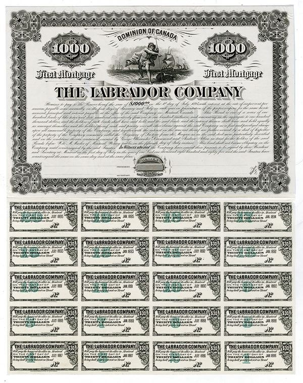
The Bond Market
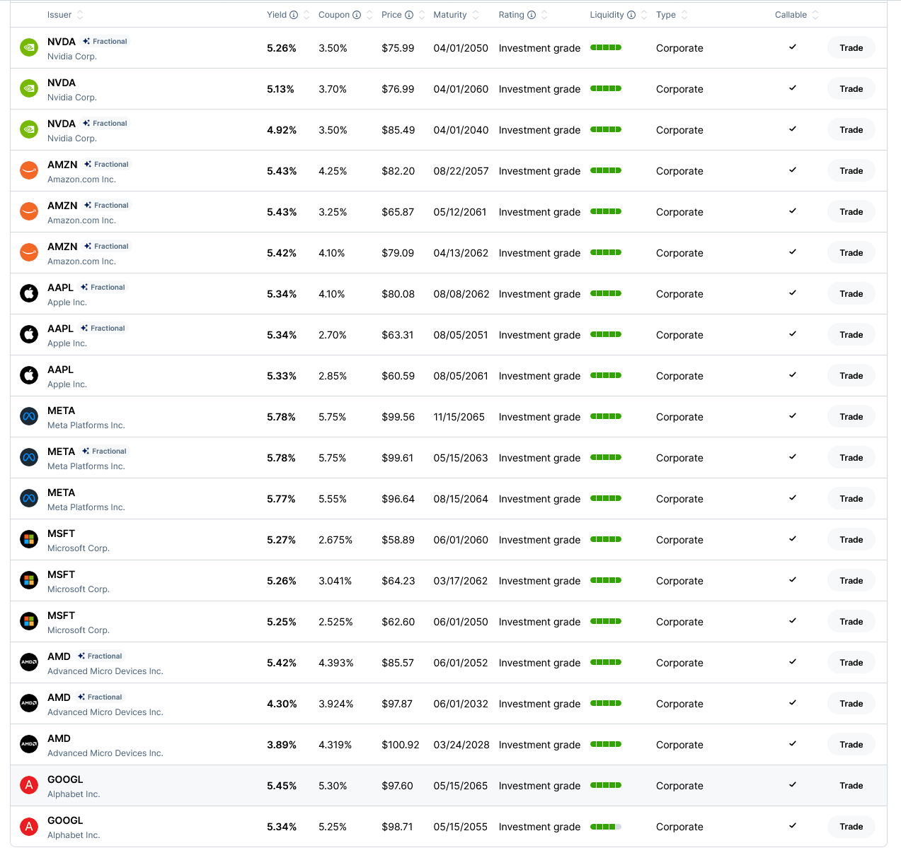
The bond market is where firms issue bonds and bondholders invest — lending money in exchange for interest.
US firms issued over $1.5 trillion in bonds in 2024 — the bond market is roughly twice the size of the stock market.
Equity Capital: Stocks & IPOs
Stocks sell partial ownership (equity). Shareholders are owners; an IPO is the first public sale to raise capital. Market cap = the firm’s stock-value worth; capital gains = price rises. Traded on NYSE/NASDAQ.
Advantages: raise big capital, no repayment, limited liability for losses.
Disadvantages: lose ownership & profits (dividends), mandatory disclosure, outside influence on management.
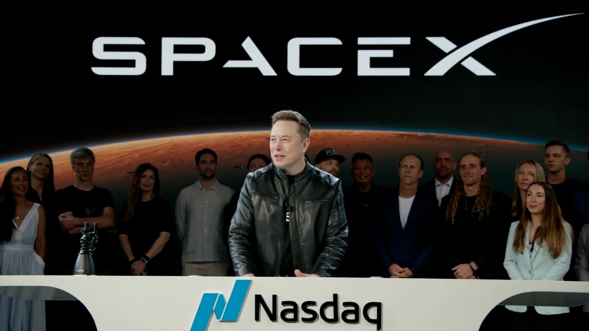
SpaceX’s eventual IPO is among the most anticipated ever. Press ↓ for a cautionary tale.
Why Would SpaceX Go Public?
SpaceX is privately held — valued around $350B (2024). An IPO would sell shares to the public to raise enormous capital.
What would they fund with it? Capital-hungry bets: Starship development, the Starlink satellite network, and the Mars program.
Why wait? Going public means quarterly disclosure and shareholder pressure — which can clash with Musk’s very long-horizon Mars goals.
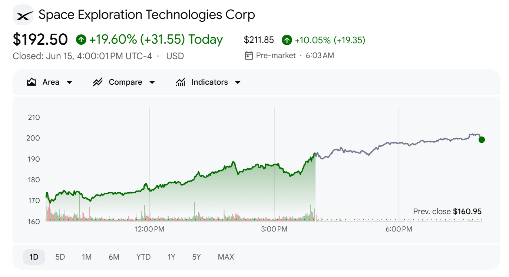
A hypothetical SpaceX ticker — the firm trades the capital of an IPO against the freedom of staying private.
Stocks Are Risky: The Cisco Lesson
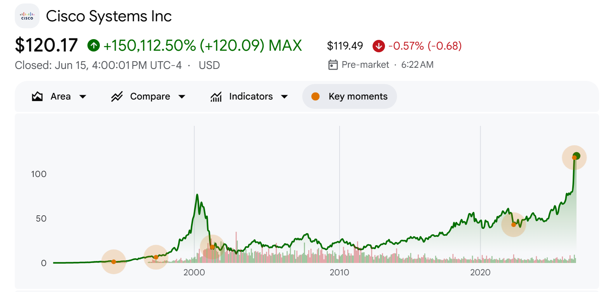
Buy Cisco at the 2000 dot-com peak (~$80) and you waited 20+ years just to break even — even though Cisco was a great company.
Holding all those years, the opportunity cost was huge — you missed the internet, social-media, and mobile booms.
A great company at the wrong price is a bad investment. Now think about today’s AI valuations…
The Rise and Fall of Meme Stocks
Easy access: apps like Robinhood — no fees, gamified — brought millions of retail investors into the market.
GameStop, Jan 2021: r/WallStreetBets coordinated a short squeeze — $17 → ~$500 in weeks with no change in fundamentals — then it crashed −82%.
The market is risky: social-media hype can rip price from the present value of earnings (§15.2). No guaranteed profit — gains for some, losses for many. (Behavioral econ, Ch 18.)

Measuring Risk: The “Fear Index”
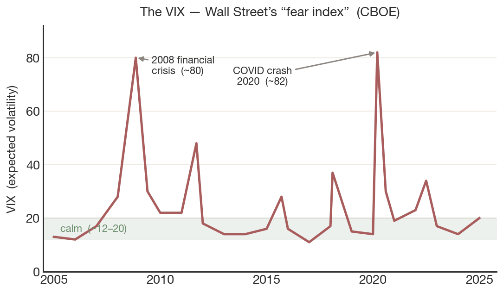
Investors gauge market risk with the VIX — the “fear index.” It measures the volatility traders expect over the next 30 days.
Low VIX (~12–20) = calm, confident markets.
High VIX = fear: it spiked near 80 in the 2008 crisis and the 2020 COVID crash. A check on how risky the moment feels.
Equity Capital: Venture Capital
Venture capital — equity funding for risky start-ups with high-growth potential: seed money in exchange for a share of ownership.
Staged funding (money grows each round): Seed → Angel → Series A → B → C → Mezzanine → IPO.
Most bets fail; a few 10× winners carry the fund. OpenAI raised $6.6B in 2024 at a $157B valuation — with zero profit.
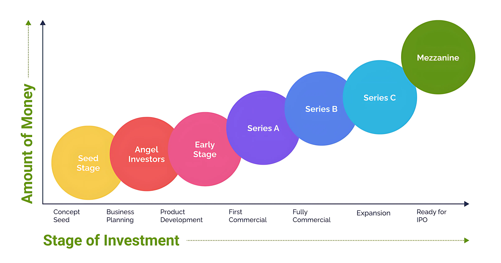
Equity Capital: Private Equity
Private equity (PE) firms raise capital to buy companies that are not publicly traded — often mature firms that are struggling — take a large (often majority) stake, improve performance, and sell for a profit years later.
They may replace management and restructure. Blackstone, KKR, Apollo, Carlyle manage trillions.
Controversial: defenders say it imposes financial discipline; critics say it loads firms with debt and cuts jobs.
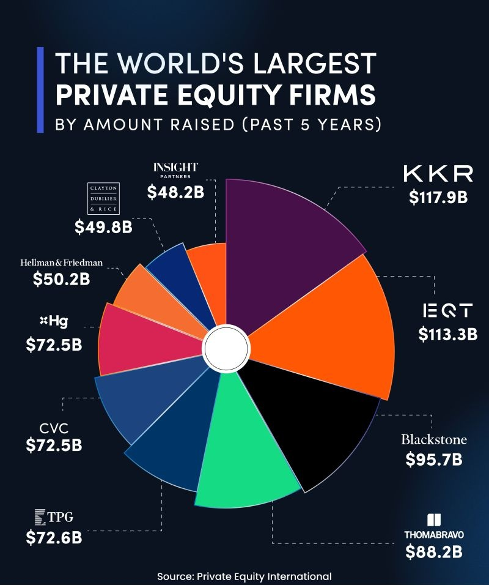
Five Channels, Side by Side
| Source | Best for | Cost to firm | Risk to investor |
|---|---|---|---|
| Bank loans | Small/medium, steady cash flow | Interest | Low (collateral) |
| Bonds | Large firms, major projects | Coupons | Medium |
| Stocks (IPO) | Growth, large capital needs | Diluted ownership | Higher |
| Venture capital | Startups, unproven tech | Large equity stake | Very high |
| Private equity | Mature firms needing a fix | Loss of control | High (leverage) |
Capital structure = the firm’s mix of debt (loans, bonds) and equity (stocks, VC, PE). The optimal mix balances debt’s tax advantage against equity’s flexibility.
Section 5 · LO 15.5
Entrepreneurship & Creative Destruction
Ingredients don’t cook themselves. Someone has to combine them and bear the risk.
The Fourth Factor of Production
The entrepreneur combines land, labor, and capital and bears the risk of failure — in exchange for the possibility of profit.
The reward is economic profit — above the opportunity cost of all inputs. In competition it tends to zero (Ch 10) unless you create something new.
Profit is also a signal: high returns tell other entrepreneurs where to send resources. AI profits in 2023–2025 triggered a stampede.
Schumpeter’s Creative Destruction
The essential fact of capitalism isn’t price competition — it’s innovation competition. New products destroy old ones (Schumpeter, 1942).
Kodak: 145,000 jobs (1988) → bankrupt 2012.
Blockbuster: 9,000 stores (2004) → one left by 2014.
Netflix: 13,000 staff, 325M subscribers.
Wealth and disruption in equal measure — managing the transition (Ch 14) is the policy challenge.
Removing Weeds: From Labor to Labor + Capital
The problem: weeds and grass compete with crops for water, light, and nutrients — cutting yields.
Old way — pure labor: hoeing weeds by hand was slow, back-breaking, and labor-intensive.
Then — labor + capital: mechanical tilling with tractors substitutes capital for some labor. Faster, but still costly — the real leap came from chemistry.
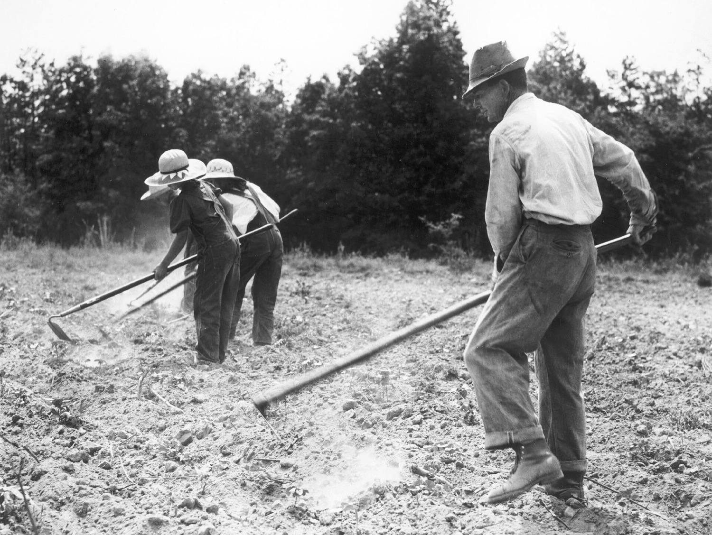
Pure labor (hoeing)
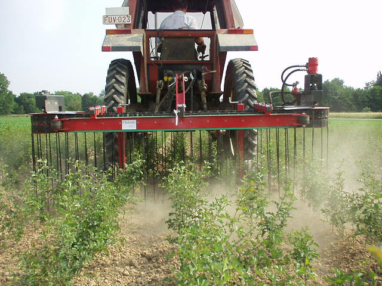
Labor + capital (tractor)
The Chemical Leap: Herbicides & Roundup Ready
1940s: selective herbicides (2,4-D) kill broadleaf weeds, not grass crops — the first shift from labor → chemical (capital) input.
1970s: Monsanto’s glyphosate (Roundup) — a non-selective herbicide that kills almost every plant.
1990s: “Roundup Ready” GMO seeds (new capital/tech input) — crops engineered immune to Roundup.
Productivity boom: plant the seed, spray the whole field, kill only the weeds → low-labor no-till farming.
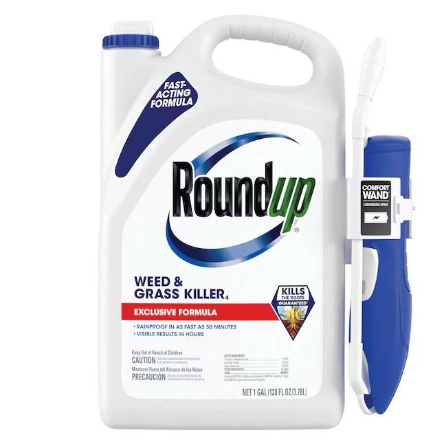
Roundup (1970s)
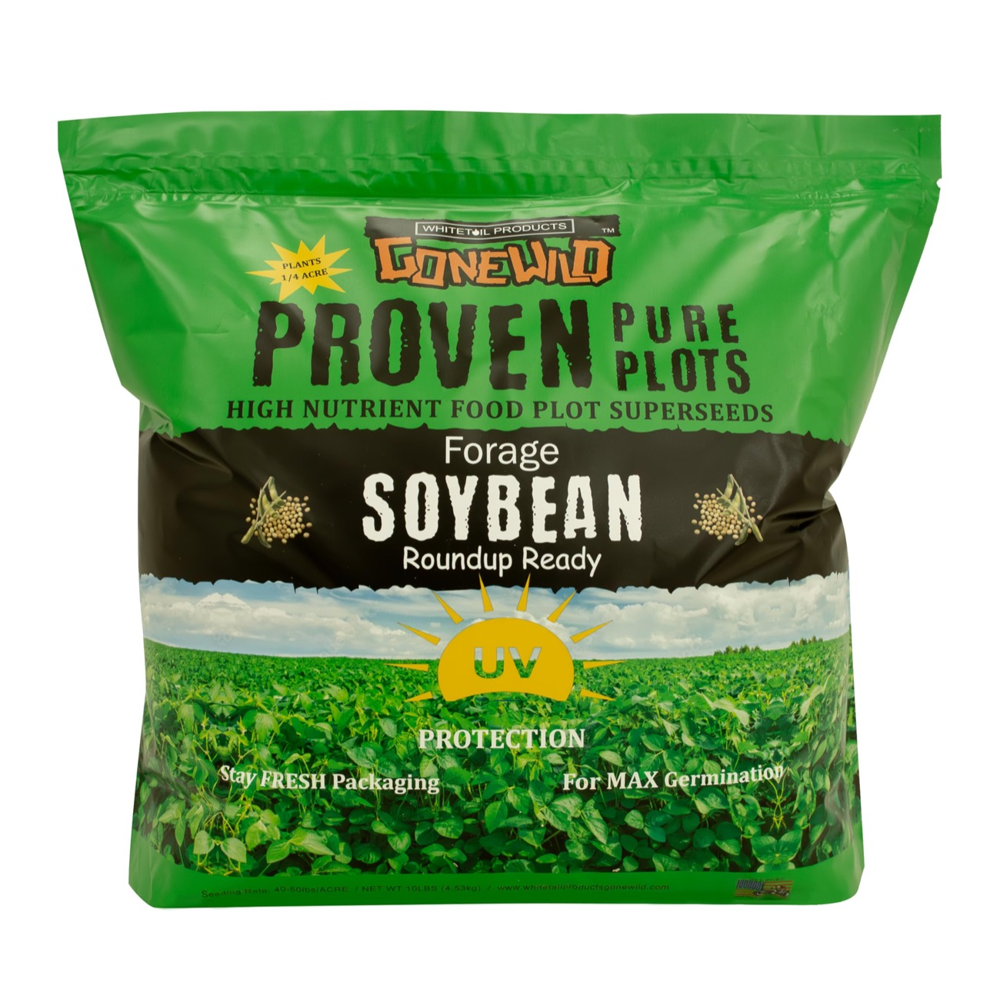
Roundup Ready seed (1990s)
Rent-theory lens: this is Ricardo’s “improving land” — technology that makes each acre far more productive. The question rent theory asks: who captures the extra output?
The Price of Productivity: Building Monopoly Power
Building the monopoly: Monsanto patented both Roundup and the Roundup Ready seed — a tied system where farmers needed both.
Controlling inputs: “Technology Use Agreements” forbade seed-saving — a practice farmers had followed for millennia — turning independent producers into yearly customers.
Abusing Market Power — The Rent-Theory Price
Abusing market power: private investigators, a 1-800-ROUNDUP snitch hotline, and lawsuits that bankrupted farmers; herbicide drift killed neighbors’ crops — join or face ruin.
The rent-theory price: the productivity gain that could have raised land rents and farm profits is captured by the patent monopolist — farmers pay more every year for seed + chemicals. Market power shifts from many small farmers to one corporation that owns the critical input.
Listen — NPR Planet Money: “A Pesticide, A Pigweed and a Farmer’s Murder” (2017)
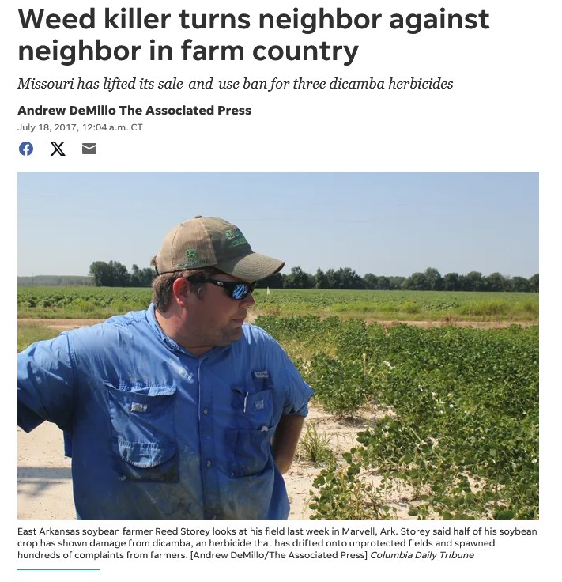
Patents: The Incentive to Innovate
Why spend millions on a new drug if rivals can copy it instantly? IP rights grant a temporary monopoly: patents (~20 yrs), copyrights, trademarks.
A drug may cost $2B to develop; most candidates fail. The winners must fund the whole pipeline — why a patented drug runs $100K/yr and the generic $500.
The tension (Ch 11): patents reward risk — but they concentrate market power and create deadweight loss. How long should the monopoly last?
Patents in Practice
The patent cliff: Humira was the world’s best-selling drug for a decade under patent. US biosimilars entered in 2023 and prices began falling — the monopoly is temporary by design.
At scale: the USPTO granted ~327,000 utility patents in 2024 — roughly 3× the 1995 count.
When IP isn’t enough: for COVID vaccines, speed beat exclusivity — Operation Warp Speed put ~$18B of public money behind development.
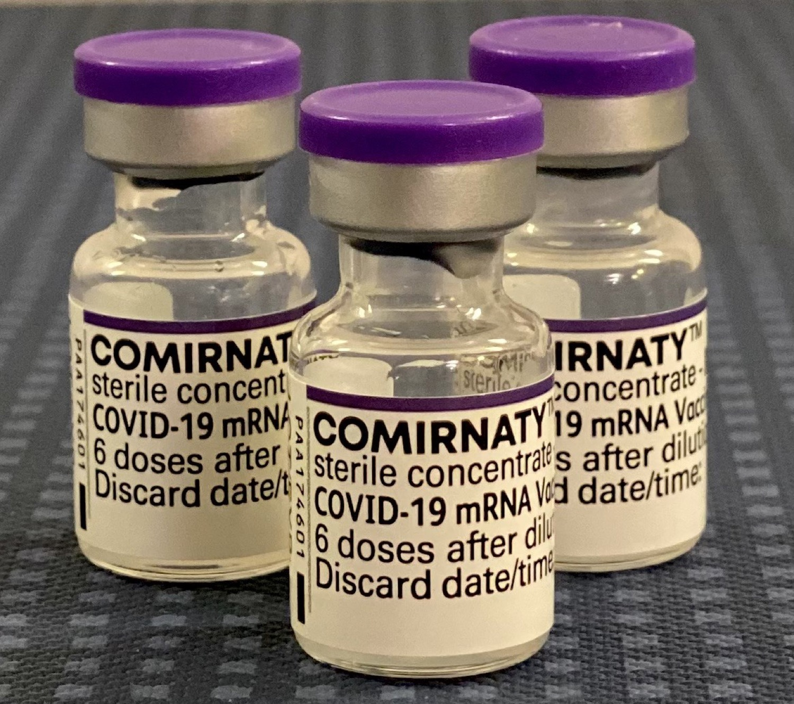
The New Wave: AI — Complement or Substitute?
An enormous bet
OpenAI $6.6B, Anthropic $7.3B; Google/Microsoft/Meta/Amazon committed $200B+ to AI in 2024–25 — betting AI is the next general-purpose technology.
Complement or substitute?
A power saw complements a carpenter; an ATM substitutes for a teller. AI coding assistants (+30–55% productivity) do both, depending on the task.
New Work: Technology Creates Jobs
Historically capital is net positive for labor — the car killed blacksmith jobs but created millions more. About 60% of US jobs in 2018 were in occupations that did not exist in 1940.
The internet created: app developer, UX designer, data scientist, cloud & cybersecurity engineer — none existed in 1990.
The AI wave is creating: prompt engineer, ML engineer, AI ethicist/auditor, model-training & data-labeling roles.
Whether AI extends that pattern or breaks it is the open question (Ch 16 picks up the spillovers).
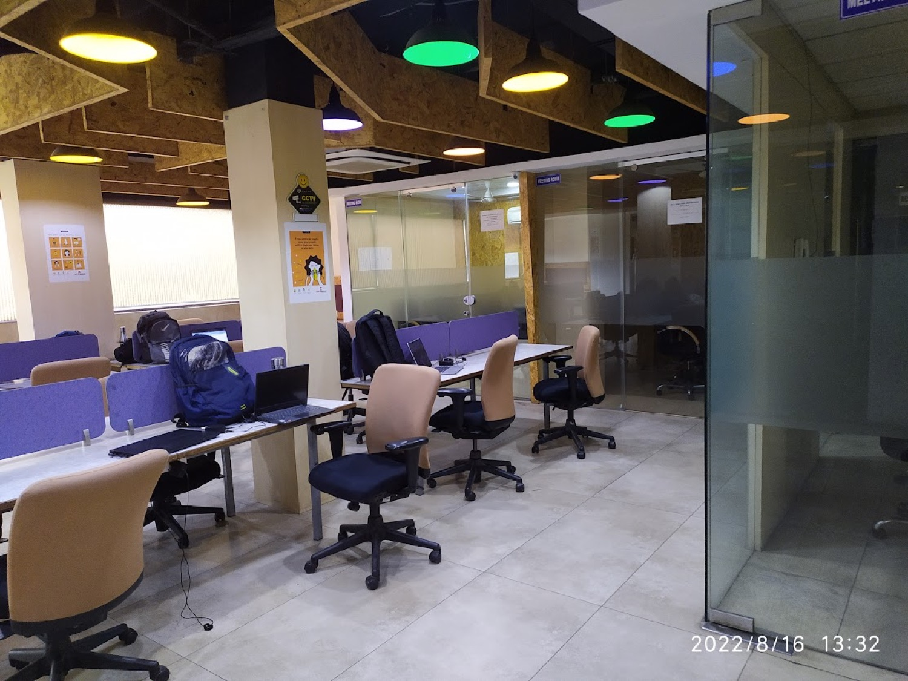
Sources: Autor, Chin, Salomons & Seegmiller, “New Frontiers… 1940–2018,” QJE 2024 (nber.org/papers/w30389) · Brynjolfsson, Li & Raymond, “Generative AI at Work,” NBER 2023 (w31161)
Innovation in Unlikely Places: Ski Dubai
A $400M indoor ski resort in one of the hottest deserts on earth (2005). It seemed absurd.
Over a million visitors a year. The entrepreneurial insight: demand for winter sports existed where no supply did. Combine capital + land + labor → a market that didn’t exist.
Key Takeaways
1. Land is fixed → vertical supply, price set by demand. The whole payment is economic rent.
2. Capital is intertemporal. Use present value; invest when the return beats the interest rate.
3. Five financing channels — loans, bonds, stocks, VC, PE — make up a firm’s capital structure.
4. The interest rate clears the loanable-funds market — the price of capital, the tissue linking all factor markets.
5. Entrepreneurs bear risk for profit — and drive growth through creative destruction.
6. Human capital obeys the same PV logic — a degree is an investment in yourself.
Next time: Chapter 16 — Externalities and the Environment. What happens when one person’s production spills onto everyone else?
Connections
Building On
- Ch 4: Supply & demand — now applied to land & funds
- Ch 9–10: Cost, profit, and zero economic profit
- Ch 14: Derived demand, MRP, human capital
Setting Up
- Ch 11: Patents & monopoly power from innovation
- Ch 16: Externalities — spillovers from production
- Ch 18: Behavioral economics — meme stocks & bubbles
From the Manhattan parking lot to the Fed’s rate decisions — one logic prices every factor that isn’t labor.
Exit Ticket
A food truck costs $80,000 and is expected to add $25,000/year in profit for 4 years (no resale value).
At a market interest rate of 5%, the present value of the profit stream is about $88,650. Should the company buy the truck? Explain in one sentence.
Submit on Canvas. 2 minutes.